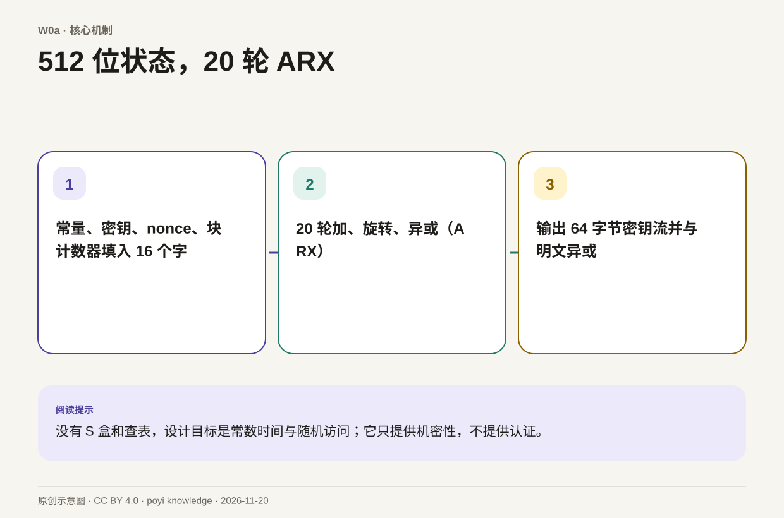
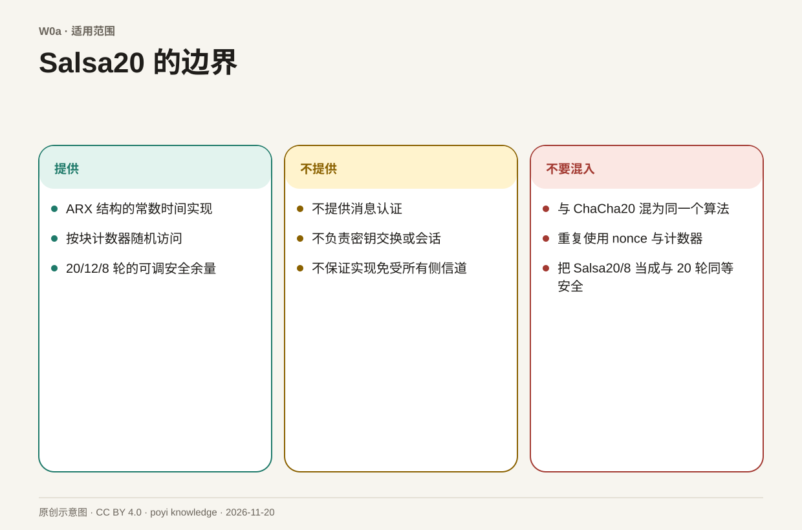

原理与机制
算法：Salsa20 流密码（Salsa20）。Salsa20 是一个流密码，Daniel J.Bernstein 设计。它的状态是 16 个 32 位字（共 512 位 = 64 字节），全部运算只用三种操作：加、旋转、异或（所以叫 ARX）。1.把状态填成四行四列：第 0 行是四个常量 "expand 32-byte k"，第 1–2 行是 256 位密钥，第 3 行是 64 位 nonce，第 4 行是 64 位块计数器。2.做 20 轮（10 个双轮）。每一轮把 4 个字的列旋转、加、异或，行也一样；然后把 16 个字加回去。列和行的操作是同一个「quarter round」。3.把最终状态按小端序输出成 64 字节密钥流，和明文异或即得密文。- 没有 S 盒，没有查表。所有操作都是整数加、循环移位、异或。这意味着它天然是常数时间的，不会因为数据相关的缓存访问而泄露密钥——这是它当年最大的卖点。- 没有密钥扩展。密钥直接躺在状态里，「换密钥」的成本是零。- 可随机访问。想拿第 n 块密钥流？把块计数器设成 n 就行。- 块大小 64 字节，比 AES 的 16 字节大，对串行 CPU 更友好。另有缩减轮版本 Salsa20/8 和 Salsa20/12（同一份设计文档里提出），用更少的轮数换速度，安全余量也更薄。

为什么重要
Salsa20 回答了 AES 回答不了的问题：当你的硬件没有 AES 指令时，怎么在软件里高速加密。
故事很具体。2005 年 Bernstein 把它设计出来时（最早叫 Snuffle 2005），大多数 x86 服务器上还没有 AES-NI，软件跑 AES 很慢，而 Salsa20 只用加法、移位和异或——这些在任何 CPU 上都是一两条指令。Bernstein 后来在 NaCl 里同时提供 AES 和 Salsa20，让你自己量。Salsa20 还赢在几个「工程友好」的地方：
- 常数时间。没有查表就没有缓存计时攻击面。软件实现写对了，就不怕 Bernstein 2005 年发明的 AES 缓存计时攻击那一类东西。- 密钥 agility。密钥直接进状态，换密钥不花钱。- 小代码量。几百行 C 就能写对，不像 AES 那样涉及多表优化和掩码。- 公开分析。2007 年 Bernstein 把完整规范和安全性分析公开发布（eprint 2007/472），2008 年 Salsa20 进入 eSTREAM 最终推荐组合，成为流密码类的软件首选之一。它还带出了两个后代：XSalsa20（2008，nonce 扩到 192 位）和 ChaCha（2008，换了轮函数以加强扩散），后者才是真正席卷互联网的那个。
应用与实例
- NaCl 与 libsodium：Bernstein 自己写的网络与密码学库（NaCl，2008）和它的社区继任者 libsodium 里，Salsa20 是主力原语；libsodium 同时提供 Salsa20、Salsa20/12、Salsa20/8、XSalsa20、ChaCha20 等一整套。- Go 的标准扩展库：
golang.org/x/crypto/salsa20，文档里就写明它实现的是 Bernstein 的规范，同时支持 XSalsa20。- RustCrypto 的salsa20crate 与salsacrate（20 轮与 12 轮）。- OpenSSL：EVP 接口提供 Salsa20 和 ChaCha20 密码。- Linux 内核：crypto API 里既有通用实现crypto/salsa20_generic.c，也有 x86 汇编实现arch/x86/crypto/salsa20_glue.c（2017 年还因此修过 CVE-2017-17806 的空输入崩溃）。- Tor：它的 NaCl 传输层用的就是 NaCl 的 secretbox（XSalsa20-Poly1305）。- 真正席卷互联网的是它的接班人：ChaCha20（RFC 8439，2018 年 6 月）进了 TLS 1.3、WireGuard、OpenSSH（chacha20-poly1305@openssh.com）、Signal 的 XChaCha20-Poly1305、iOS 与 Android 的系统加密库，以及几乎所有 QUIC 实现。换句话说：Salsa20 本人的部署面不算大，但它塑造了今天几乎所有「软件加密」的位置。
边界与攻击面
完整 20 轮的 Salsa20 至今没有已知的实用攻击。它的攻击面全在「怎么用」上。
- Nonce 重用：同一密钥下 nonce 重复，密钥流重复，两段明文的异或直接暴露。Salsa20 的 64 位 nonce 空间看起来很大，但如果随机生成，生日界意味着大约 2^32 条消息之后重复概率就不可忽略。XSalsa20 把 nonce 扩到 192 位，正是为了解决这个尴尬。- 完全没有认证：Salsa20 只是密钥流。翻转密文比特就翻转明文比特，可以改内容、可以截断、可以拼接。实际部署必须配一个 MAC（XSalsa20-Poly1305 就是标准答案）。- 缩减轮版本余量更薄：Crowley 给出 Salsa20/5 的攻击，代价约 2^165 次运算；Aumasson 等人（2008）给出 Salsa20/7 的 2^151 攻击，并对 Salsa20/8 估算出 2^251 的复杂度。完整 20 轮仍然安全，但 Salsa20/8 并不是「一样安全、只是更快」。- 分段必须一致：Salsa20 是「面向消息」的——密钥流块的边界取决于消息怎么切。收发两边的分段方式不一致，解密就错位。Go 的
x/crypto/salsa20文档专门警告了这一点。- 相关密钥攻击没有防护：因为没有密钥扩展，密钥直接进状态，NaCl 明确声明不承诺抵抗相关密钥攻击。- 侧信道：没有查表，缓存计时这一类威胁基本消失；但实现若写成非常数时间（比如数据相关的分支或可变时间比较），照样会漏。- 量子：Grover 把 256 位密钥的暴力搜索代价从 2^256 降到约 2^128——仍然不可行，但这是所有 256 位对称密码的共同命运。- 一个常被误解的点：Salsa20 核心函数存在已知的「滑动对」（slid pair）碰撞，但内置的对角常量恰好挡住了它——这不是漏洞，是设计里有意为之。

历史与背景
- 2005 年：Bernstein 设计出 Salsa20，最初叫 Snuffle 2005，同年 4 月 27 日发布设计文档。- 2007 年 12 月 24 日：Bernstein 在 eprint 2007/472 发表《The Salsa20 Family of Stream Ciphers》，公开完整规范、测试向量和安全性分析；同期他写了《Salsa20/8 and Salsa20/12》，正式提出缩减轮变体。- 2008 年 4 月：eSTREAM 最终推荐组合公布，Salsa20 入选流密码类（软件级）。- 2008 年：Bernstein 提交 NaCl（Sodium 的前身），Salsa20 成为其中最常用的原语之一；同年他还提出了 XSalsa20（192 位 nonce）和 ChaCha——改了轮函数、加强扩散的 Salsa20 变体。- 2010 年前后：ChaCha 在 Tor、OpenSSH 等项目里落地；Bernstein 的 ChaCha 论文也被 NIST 的 SHA-3 竞赛最终轮 BLAKE 团队参考（ChaCha 的核心被 BLAKE 借用）。- 2013 年：ChaCha20 在 Android 4.1（KitKat）和 iOS 上被大规模采用，作为没有 AES 硬件加速时的软件加密方案。- 2016 年 6 月：RFC 7905 把 ChaCha20-Poly1305 引入 TLS 1.2。- 2018 年 6 月：RFC 8439 把 ChaCha20 与 Poly1305 标准化为 IETF 协议套件；同年 TLS 1.3 把它列为建议实现的套件之一。
逐步示例与核验
形式模型与复算步骤
[C=E_K(P;r),\qquad P=D_K(C)]
Salsa20 流密码的公开参数、密钥/随机数与消息；变量说明：P 明文，C 密文，K 密钥，r 随机化参数。1.按算法规范编码输入。2.在密钥控制下执行轮函数。3.输出密文并检查长度与格式。边界：公式只覆盖已登记的参数与假设；参数取值、标准版本和实现细节仍以来源为准。
参考出处
- Wikipedia search entry for Salsa20 流密码. https://zh.wikipedia.org/w/index.php?search=Salsa20%20%E6%B5%81%E5%AF%86%E7%A0%81
- Handbook of Applied Cryptography (Menezes, van Oorschot, Vanstone). https://www.cacr.math.uwaterloo.ca/hac/